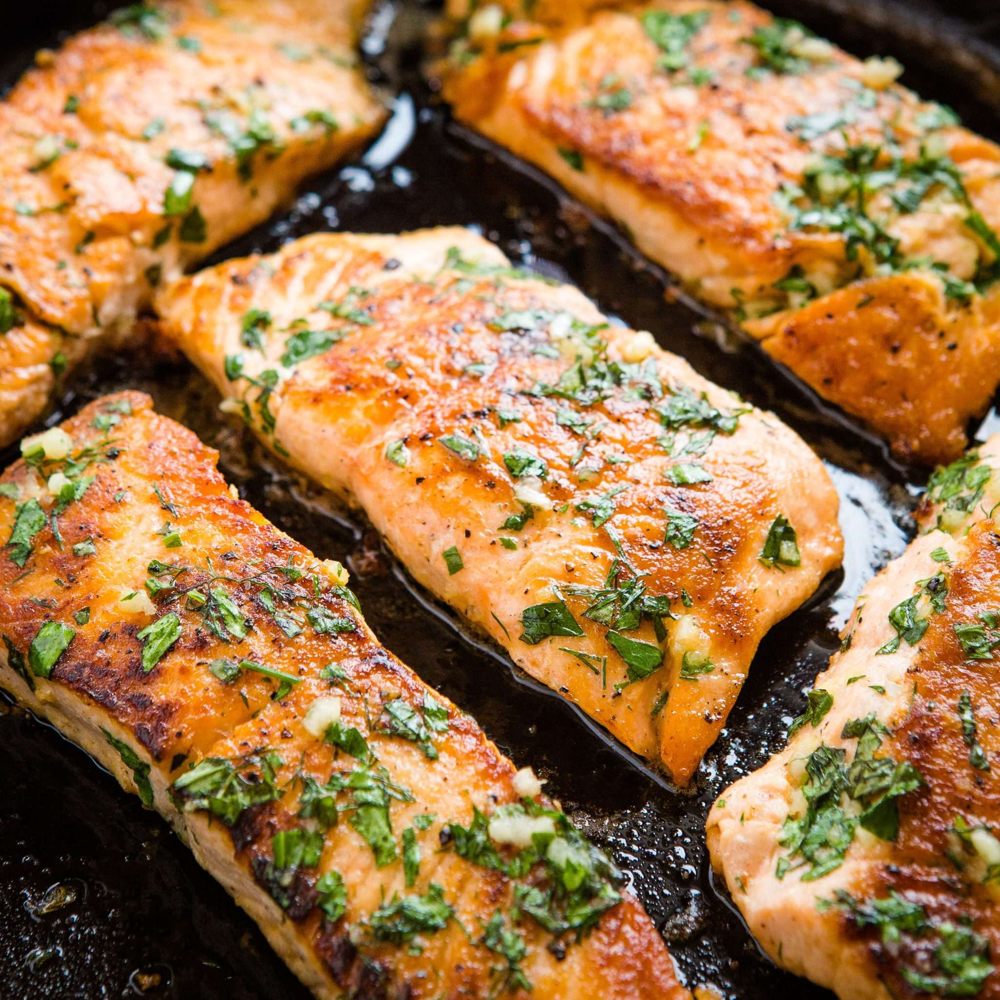

Stovetop Salmon

Description
This stovetop salmon dish is used to complement any dish with a rustic taste and source of rich protein!
Ingredients
- 2 salmon fillet (either fresh or frozen, pink or wild)
- 2 cups of mushrooms, chopped
- 3 roma tomatoes, chopped
- 1 Onion (either Sweet or Red)
- 1/4 tbsp of tumeric
- 1 tbsp of basil
- 1 tbsp of thyme
- Olive oil (as necessary)
Steps
- Place a 12-inch skillet/saucepan on the stovetop at MEDIUM heat
- When warm, add olive oil
- Add salmon fillets to the skillet
- Add tomatoes, onion, mushrooms
- Lightly coat one side of the salmon with a dusting of tumeric, basil, and thyme
- Flip salmon once golden brown (~5 minutes depending on stove)
- Lightly dust the other side of the salmon with tumeric, basil, and thyme
- Stir mushrooms, tomatoes, and onions to avoid burning
- Remove from heat and add to a plate once both sides of the salmon are cooked to your liking
- Garnish with salt, pepper, and basil leaves
- Enjoy?
Back to the Top
Back to Home